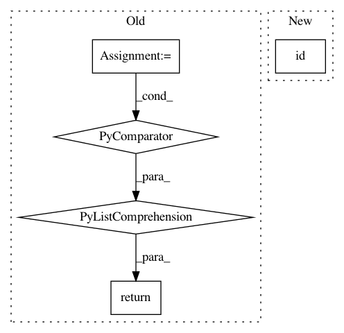

ff6c598abad81aec828e6a5967d2c6cfc5779a19,hyperopt/theano_gp.py,GP_BanditAlgo,K_fn,#GP_BanditAlgo#Any#Any#,503
Before Change
fill_value = 1
else:
fill_value = 0
gram_matrices = [
kern.K(
//iv0.idxs,
iv0.vals.dimshuffle(0, "x"),
//iv1.idxs,
iv1.vals.dimshuffle(0, "x"),
//fill_value=fill_value
)
for kern, iv0, iv1 in zip(self.kernels, x0, x1)]
if self.multiplicative_kernels:
return tensor.mul(*gram_matrices)
else:
return tensor.add(*gram_matrices)
def prepare_GP_training_data(self, X_IVLs, Ys, Ys_var):
if self.constant_liar_global_mean:
y_mean = numpy.mean(Ys["ok"][:self.n_startup_jobs])
After Change
n_train_dict = {
id(self.x_obs_IVL):self.s_n_train,
id(self.cand_x): self.s_n_test}
if x1 is x0:
nx1 = self.s_n_train
In pattern: SUPERPATTERN
Frequency: 3
Non-data size: 5
Instances
Project Name: hyperopt/hyperopt
Commit Name: ff6c598abad81aec828e6a5967d2c6cfc5779a19
Time: 2011-10-21
Author: james.bergstra@gmail.com
File Name: hyperopt/theano_gp.py
Class Name: GP_BanditAlgo
Method Name: K_fn
Project Name: keras-team/keras
Commit Name: 555ca942df407b8c1bf1d48383c60fa1bf09cc1d
Time: 2019-08-28
Author: francois.chollet@gmail.com
File Name: keras/utils/layer_utils.py
Class Name:
Method Name: count_params
Project Name: pytorch/pytorch
Commit Name: 249c21346208b682d128e28fe4480262f8b76cd8
Time: 2021-02-27
Author: benjamin.lefaudeux@gmail.com
File Name: torch/distributed/optim/zero_redundancy_optimizer.py
Class Name: ZeroRedundancyOptimizer
Method Name: state_dict